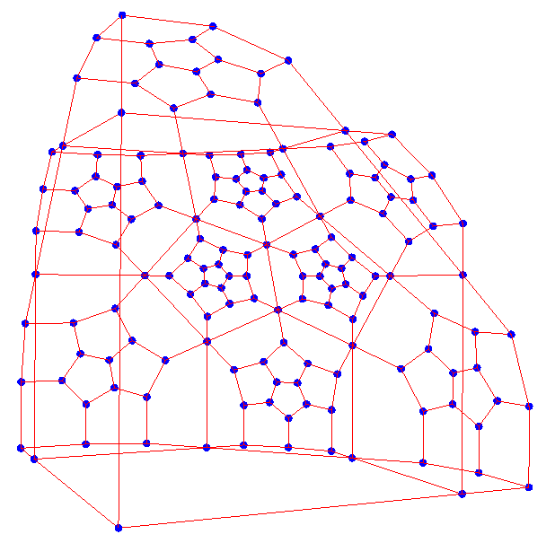
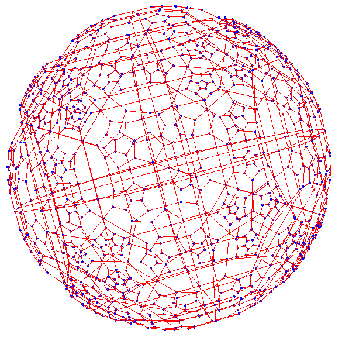
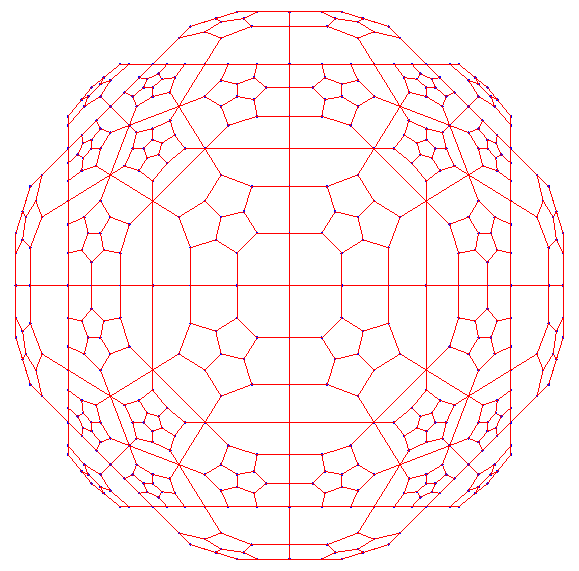

Here are the coordinates of some vertices of some hyperbolic honeycombs under the hyperboloid and Klein models. Under the hyperboloid model, the coordinates of each point is in the form of $(x_0; x_1, x_2, x_3)$, which satisfies $x_0^2 - x_1^2 - x_2^2 - x_3^2 = R^2$. The constant $R$ is different for different honeycombs. Under the Klein models, all the points are necessarily in a 3D ball with radius $R'$.
Notation: When a vertex is written as $(x_0; x_1, x_2, x_3)^S$, it represents three vertices $(x_0; x_1, x_2, x_3)$, $(x_0; x_2 x_3, x_1)$, and $(x_0; x_3, x_1, x_2)$ (even permutations of the last three coordinates). When a vertex is written as $(x_0; x_1, x_2, x_3)^A$, it represents six vertices $(x_0; x_1, x_2, x_3)$, $(x_0; x_2, x_3, x_1)$, $(x_0; x_3, x_1, x_2)$, $(x_0; x_3, x_2, x_1)$, $(x_0; x_1, x_3, x_2)$, $(x_0; x_2, x_1, x_3)$ (all permutations of the last three coordinates). The coordinates under the Klein model follow the same convention.
In principle, once we know the coordinates of one cell, we can use a Lorentz transform to move the cell to another place to get the coordinates of more vertices.$R = R' = \phi^{-1/2}$, where $\phi$ is the golden ratio. The vertices of a vertex-first model are as follows. Each nonzero number in the last three coordinates may have $\pm$ sign in front of it. I removed all the signs just for convenience.
This form includes the eight cells closest to the central vertex, and all those cells adjacent to the eight cells.
| Hyperboloid model (Radius $R = \phi^{-1/2}$) | Klein model (Radius $R' = \phi^{-1/2}$) |
| Cells closest to the center | |
| $(\phi^{-1/2}; 0,0,0)$ | $(0,0,0)$ |
| $(\phi^{1/2}; 1, 0, 0)^S$ | $(1,0,0)^S$ |
| $(\phi^{3/2}; \phi, 1, 0)^A$ | $(1,\phi^{-1},0)^A$ |
| $(\phi^{5/2}; \phi^2, \phi, 1)^A$ | $(1,\phi^{-1},\phi^{-2})^A$ |
| $(2 \phi^{3/2}; \phi^2, \phi^2, \phi)^S$ | $(\phi/2,\phi/2,1/2)^S$ |
| $(\sqrt{5} \phi^{3/2}; \phi^2, \phi^2, \phi^2)$ | $(\phi/\sqrt{5},\phi/\sqrt{5},\phi/\sqrt{5})$ |
| Second layer cells along the axes | |
| $(\phi^{5/2}; 2 \phi, 0, 0)^S$ | $(2/\phi,0,0)^S$ |
| $(\phi^{7/2}; 2 \phi^2, 1, 0)^A$ | $(2/\phi,1/\phi^3,0)^A$ |
| $(\sqrt{5} \phi^{3/2}; \phi^3, \phi, 0)^A$ | $(\phi^2/\sqrt{5},1/\sqrt{5},0)^A$ |
| $(\phi^{9/2}; 2 \phi^3, \phi, 1)^A$ | $(2/\phi,1/\phi^3,1/\phi^4)^A$ |
| $(2 \phi^{5/2}; \sqrt{5} \phi^2, \phi^2, \phi)^A$ | $(\sqrt{5}/2,1/2,1/(2\phi))^A$ |
| $(\sqrt{5} \phi^{5/2} ; \phi^4, \phi^2, 1)^A$ | $(\phi^2/\sqrt{5},1/\sqrt{5},1/(\sqrt{5}\phi^2))^A$ |
| $(3 \phi^{5/2}; \sqrt{5} \phi^3, \phi^2, \phi)^A$ | $(\sqrt{5}\phi/3,1/3,1/(3\phi))^A$ |
| $(\phi^{9/2}; 3 \phi^2, \phi^2, \phi^2)^S$ | $(3/\phi^2,1/\phi^2,1/\phi^2)^S$ |
| $(2\phi^{7/2}; \phi^5-1, \phi^2, \phi^2)^S$ | $(\phi^2/2-1/(2\phi^3),1/(2\phi),1/(2\phi))^S$ |
| Second layer cells along x=y, z=0 direction | |
| $(\phi^{7/2}; \phi^3, 2 \phi, 0)^A$ | $(1,2/\phi^2,0)^A$ |
| $(\phi^{9/2}; \phi^4, 2 \phi^2, 1)^A$ | $(1,2/\phi^2,1/\phi^4)^A$ |
| $(\sqrt{5} \phi^{5/2}; 2 \phi^2, 2 \phi^2,0)^S$ | $(2/\sqrt{5},2/\sqrt{5},0)^S$ |
| $(\sqrt{5} \phi^{5/2}; \sqrt{5} \phi^2, \phi^3, \phi)^A$ | $(1,\phi/\sqrt{5},1/(\sqrt{5}\phi))^A$ |
| $(\phi^{11/2} - \phi^{1/2}; \sqrt{5} \phi^3, 2 \phi^3, \phi)^A$ | $(\sqrt{5} \phi^3/(\phi^5-1), 2 \phi^3/(\phi^5-1), \phi/(\phi^5-1))^A$ |
| $(\sqrt{5}\phi^{7/2}; 2 \phi^3, 2 \phi^3, 1)^S$ | $(2/\sqrt{5},2/\sqrt{5},1/(\sqrt{5}\phi^3))^S$ |
| $(\phi^{9/2}; \sqrt{5} \phi^2, \sqrt{5} \phi^2, \phi^2)^S$ | $(\sqrt{5} /\phi^2, \sqrt{5} /\phi^2, 1/\phi^2)^S$ |
| $(2 \phi^{7/2}; 3\phi^2, \phi^4, \phi^2)^A $ | $(3/(2\phi), \phi/2, 1/(2\phi))^A$ |
| $(\phi^{11/2}; \phi^5 - 1, \sqrt{5}\phi^3, \phi^2)^A$ | $(1-1/\phi^5, \sqrt{5}/\phi^2, 1/\phi^3)^A$ |
| Second layer cells close to the x=y=z direction | |
| $(\phi^{9/2}; \phi^4, \phi^3, 2 \phi)^A $ | $(1,1/\phi,2/\phi^3)^A$ |
| $(\phi^{11/2} - \phi^{1/2}; \sqrt{5}\phi^3, \phi^4, 2 \phi^2)^A$ | $(\sqrt{5}\phi^3/(\phi^5-1), \phi^4/(\phi^5-1), 2 \phi^2/(\phi^5-1))^A$ |
| $(\sqrt{5} \phi^{7/2}; \sqrt{5}\phi^3, 2 \phi^2, 2 \phi^2)^S$ | $(1, 2/(\sqrt{5} \phi), 2/(\sqrt{5} \phi))^S$ |
| $(3\phi^{5/2}; \phi^4, \phi^3, \sqrt{5} \phi^2)^A$ | $(\phi^2/3, \phi/3, \sqrt{5}/3)^A$ |
| $(\phi^{13/2} - 2 \phi^{3/2}; 2 \phi^4, \sqrt{5} \phi^3, 2 \phi^3)^A $ | $(2 \phi^3/(\phi^5-2), \sqrt{5} \phi^2/(\phi^5-2), 2 \phi^2/(\phi^5-2))^A$ |
| $(\phi^{11/2} + 2 \phi^{3/2}; 2 \phi^4, 2\phi^3, 2\phi^3)^S$ | $(2 \phi^3/(\phi^4+2), 2\phi^2/(\phi^4+2), 2\phi^2/(\phi^4+2))^S$ |
| $(2 \phi^{7/2}; \phi^4, \sqrt{5} \phi^2, \sqrt{5} \phi^2)^S$ | $(\phi/2, \sqrt{5}/(2\phi),\sqrt{5}/(2\phi))^S$ |
| $(\phi^{11/2}; \sqrt{5} \phi^3, 3\phi^2, \phi^4)^A $ | $(\sqrt{5}/\phi^2, 3/\phi^3, 1/\phi)^A$ |
| $(\sqrt{5} \phi^{9/2}; 2 \phi^4, \phi^5 - 1, \sqrt{5}\phi^3)^A$ | $(2/\sqrt{5}, \phi/\sqrt{5} - 1/(\sqrt{5}\phi^4), 1/\phi)^A$ |
When plotted in the Klein model, the cells in one octant looks like this:
The whole model is:
When projected orthogonally:
The plots are generated by Mathematica. Download the notebook.
Based on my experience with these honeycombs when I made the visualization "Inside H3", the coordinates can fit into the golden ratio field in the same way as in {5,3,4}. That is, in the hyperboloid model, with proper scaling, $x_1, x_2, x_3$ can fit into the golden ratio field but $x_0$ does not. In the Klein model, with proper scaling, all coordinates can fit into the golden ratio field. Actual numbers will documented later.